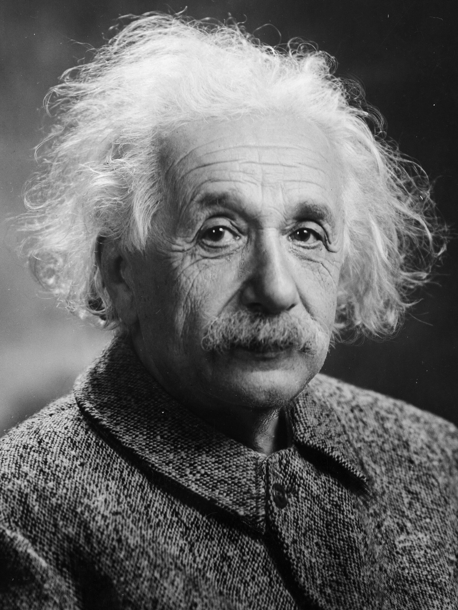

"Imagination is more important than knowledge. For knowledge is limited, whereas imagination embraces the entire world, stimulating progress, giving birth to evolution."
— Albert Einstein
Albert Einstein was a German-born theoretical physicist who developed the theory of relativity, one of the two pillars of modern physics (alongside quantum mechanics). His work is also known for its influence on the philosophy of science. He is best known to the general public for his mass–energy equivalence formula E = mc2, which has been dubbed "the world's most famous equation". He received the 1921 Nobel Prize in Physics "for his services to theoretical physics, and especially for his discovery of the law of the photoelectric effect", a pivotal step in the development of quantum theory.
Albert Einstein was born in the German Empire, which was a federal monarchy at the time. His parents were Hermann Einstein, a salesman and engineer, and Pauline Koch. When Einstein was very young, his parents worried that he had a learning disability because he was very slow to learn and talk. In 1880, the family moved to Munich, where Einstein's father and his uncle Jakob founded Elektrotechnische Fabrik J. Einstein & Cie, a company that manufactured electrical equipment based on direct current. Einstein attended a Catholic elementary school in Munich from the age of five for three years. At the age of eight, he transferred to the Luitpold Gymnasium, where he received advanced primary and secondary school education until he left the German Empire seven years later. Einstein slowly started to show his exceptional intelligence by excelling in physics and mathematics. He soon applied to the ETH Zurich by sitting the entrance examination. He failed to reach the required standards in the general part of the test, but performed with distinction in physics and mathematics. He then completed his secondary education at the Argovian cantonal school (a gymnasium) in Aarau, Switzerland, on the advice of the polytechnic's principal, graduating from there at 1896. While spending time in Aarau with the family of Jost Winteler, he fell in love with Marie, Winteler's daughter. His sister, Maja, later married Paul, who was Winteler's son.